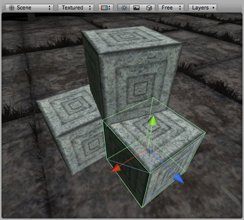
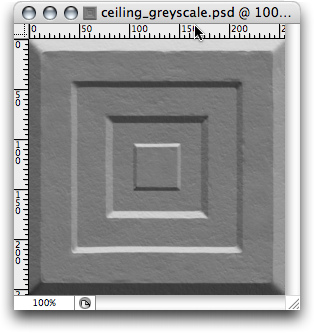
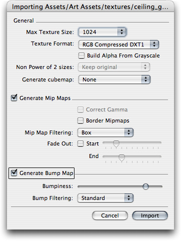
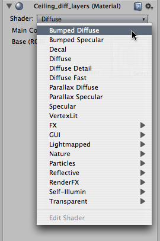
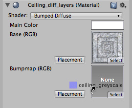
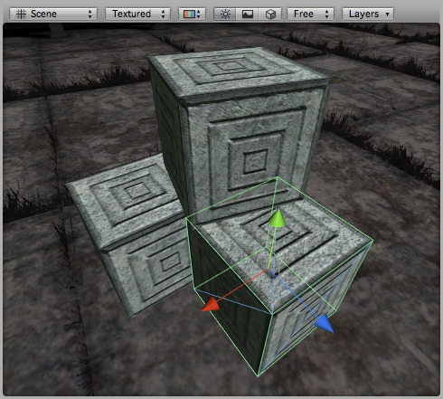

How Do I Use Bump Maps?
Bump maps are grayscale images that you use as a height map on your objects in order to give an appearance of raised or recessed surfaces. Assuming you have a model that looks like this:

The 3D Model
The 3D Model

The Texture
We want to make the light parts of the object appear raised.
- Draw a grayscale height map of your texture in Photoshop. White is high, black is low. Something like this:
 - Save the image next to your main texture.
- In Unity, select the image and choose from the menu bar.
- The Texture Import Settings dialog pops up; select the 24 bit RGB format and enable Generate Bump Map:
 - In the Material Inspector of your model, select 'Bumped Diffuse' from the Shader drop-down:
 - Drag your texture from the Project window to the 'Bumpmap' texture slot:

Your object now has a bump map applied:

Hints
- To make the bumps more noticable, either use the Bumpyness slider in the Texture Import Settings or blur the texture in Photoshop. Experiment with both approaches to get a feel for it.